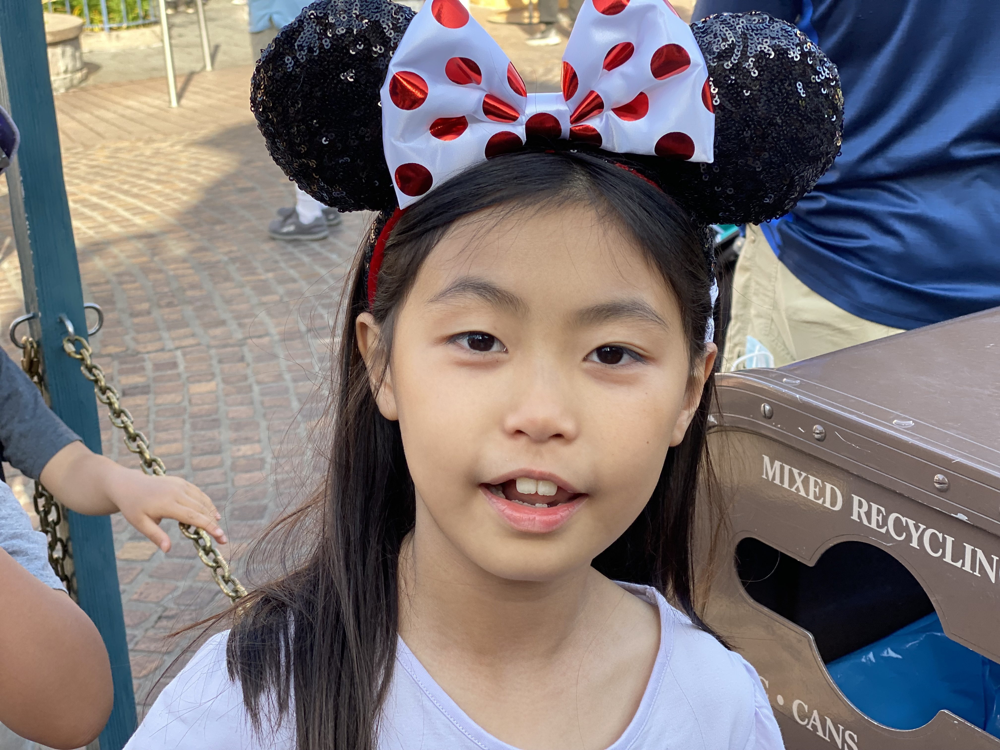

Hannah The Banana 🍌
Hannah Joo is a ordinary 3rd grade girl and likes singing all disney songs. She loves mickey mouse pancake.
Hannah Joo is a ordinary 3rd grade girl and likes singing all disney songs. She loves mickey mouse pancake.
Aiden Joo is a dreamful 2nd grade boy. He wants to be a rough rider, a swimmer like sea otter, or the funniest comedian.
Brandon Joo is a warmhearted a 1st grade boy. He has many girl friends in every his school, but it is not a scret that we dreamed to become a princess once.
Snowball is a three-year-old girl. She loves sleeping and being alone.

Pi-pi is a five-month-old boy. He loves making trouble and let his mom do the cleaning afterwards. But he is also sweet and love being around with you.
Vedant/Chimu grew up playing Tennis and loves it. He is a Freshman at University of Washington. He has decided to major in Bio Medical Engineering and Pre-Med. He wants to be a doctor and do research after his MD PhD. Vedant loves to be around lot of people.
Nandini/Aaru is 8th grader. She loves math and Computer Science. She loves music and indian classical singing. She is learning indian classical instrument Harmonium. Nandini also plays tennis and does swimming but just for fun. She wants be a professor in math or computer Science professional.